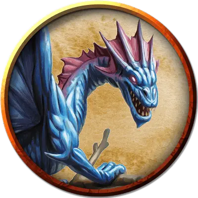

Отто
Otto
Большой Дракон, хаотично-добрый, именной НИП

Класс Доспеха 15
Хиты 104 (16к10 + 16)
Скорость 10 футов, летая 60 футов
| мод | спас | ||
|---|---|---|---|
| СИЛ | 18 | +4 | +4 |
| ЛОВ | 20 | +5 | +5 |
| ТЕЛ | 13 | +1 | +1 |
| мод | спас | ||
|---|---|---|---|
| ИНТ | 14 | +2 | +2 |
| МДР | 12 | +1 | +1 |
| ХАР | 16 | +3 | +3 |
Навыки Восприятие +3, Магия +4, Скрытность +7
Чувства тёмное зрение 60 футов, пассивное Восприятие 13
Языки Драконий, Сильван
Опасность 3 (700 опыта)
Бонус мастерства +2
Особенности
Превосходная невидимость. Дракон может бонусным действием магическим образом стать невидимым, пока концентрируется (как при концентрации на заклинании). Всё снаряжение, которое дракон несёт или носит, становится невидимым вместе с ним.
Ограниченная телепатия. При помощи телепатии дракон может магическим образом общаться со всеми другими волшебными дракончиками в пределах 60 футов.
Сопротивление магии. Дракон совершает с преимуществом спасброски от заклинаний и прочих магических эффектов.
Врождённое колдовство. Базовой характеристикой дракона является Харизма (Сл спасброска от заклинания 13). Он может накладывать некоторые заклинания, не нуждаясь в материальных компонентах. Когда дракон взрослеет и меняет цвет, он получает дополнительные заклинания, как показано ниже.
• 1/день каждое: волшебная рука [mage hand], малая иллюзия [minor illusion], пляшущие огоньки [dancing lights], сверкающие брызги [color spray], отражения [mirror image], внушение [suggestion], образ [major image], мираж [hallucinatory terrain], превращение [polymorph]
Действия
Укус. Рукопашная атака оружием: +7 к попаданию, досягаемость 5 футов, одно существо. Попадание: 11 (2к6 + 4) колющего урона.
Благодушное дыхание (перезарядка 5–6). Дракон выдыхает облако газа, вызывающего эйфорию, на одно существо, находящееся в пределах 5 футов от него. Цель должна преуспеть в спасброске Мудрости Сл 11, иначе в течение 1 минуты не сможет совершать реакции, и в начале каждого своего хода должна будет бросать к6, чтобы определить своё поведение в этом ходу:
• 1–4. Цель не совершает ни действия, ни бонусные действия, и всё своё перемещение тратит на перемещение в случайным образом выбранном направлении.
• 5–6. Цель не перемещается, и единственное, что может делать в этом ходу, это совершение спасброска Мудрости Сл 11, оканчивая эффект на себе при успехе.
Описание
Фиолетовый волшебный дракончик Отто был привлечен вплетенной в эти пещеры магией Халастера. Обнаружив замок Мэдгота, Отто решил устроить здесь своё логово. На него не действует уменьшающая размеры магия замка, и он удобно устроился в своем новом доме. Отто питается летучими мышами и другими вредителями, которых находит в окружающих пещерах.
Когда ему становится скучно, волшебный дракончик под покровом невидимости покидает замок и использует свои заклинания иллюзий, внося изменения в пещеры каменных великанов и сбивая их с толку для собственного развлечения. Великаны понятия не имеют, кто или что несет ответственность за эти волшебные шалости.
Волшебный дракончик хотел бы избавиться от гомункула Мэдгота, ставшим неприятным напоминанием об истинном владельце замка. Отто уже не раз побеждал гомункула в физическом бою, но он постоянно возвращается назад.
Дракончик пришел к выводу, что единственный способ избавиться навсегда от гомункула - насильно вытащить его из замка и поймать в ловушку в каком-либо другом месте. Если персонажи сделают это для него, Отто позволит им использовать замок для отдыха - при условии, что они не будут злоупотреблять его гостеприимством и грабить помещения.
Когда хиты Отто снижаются вдвое и меньше, он становится невидимым и сбегает, пытаясь найти укромное место в замке, но покидает его, если это будет необходимо. При встрече с ним за пределами замка, Отто имеет размер и статистику волшебного дракончика (Фиолетовый) [faerie dragon (Violet)].
Всякий раз, когда размер Отто уменьшается, все очки здоровья, превышающие их новый максимум, теряются. Когда размер Отто увеличивается, любой полученный им урон, остается и вычитается из его нового максимума количества очков здоровья.